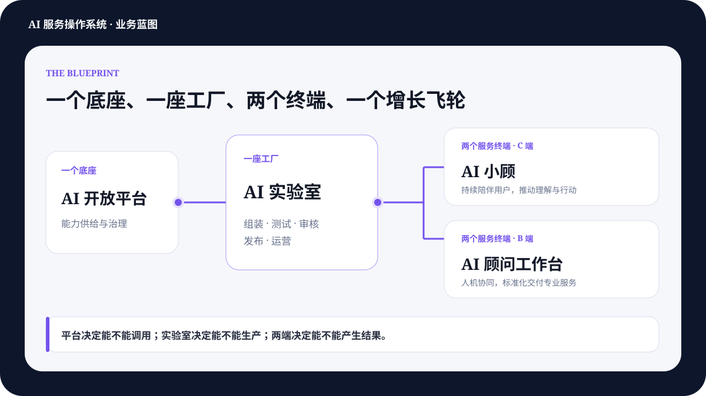
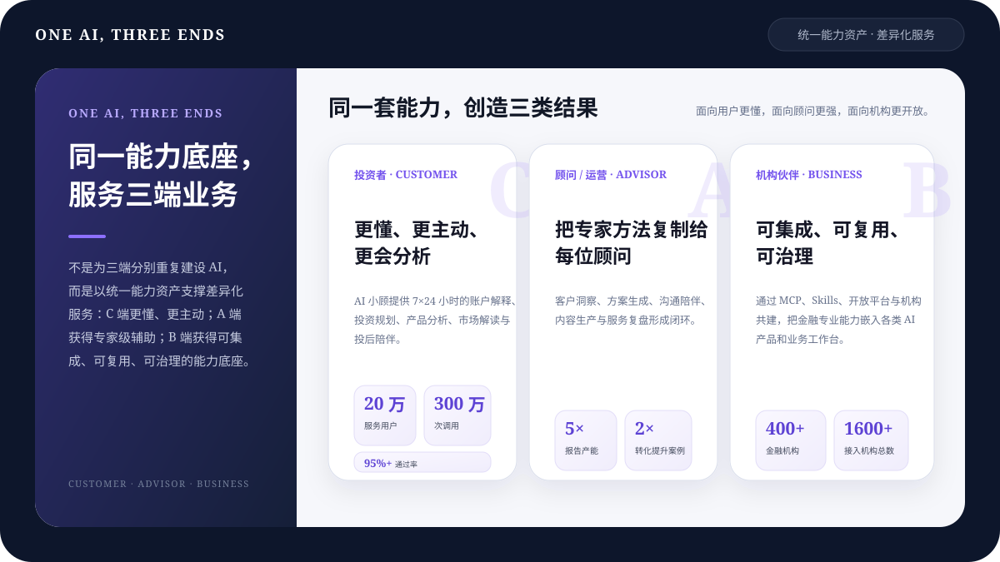

一个能力底座
数据、知识、MCP、Skills 与 Agent 在所有产品间共享，不再重复建设。
从业务解题出发，落地产品。再从金融能力底座，到每个人都能获得服务、使用能力、生产并发布服务。
数据、知识、MCP、Skills 与 Agent 在所有产品间共享，不再重复建设。
AI 实验室负责组装、测试、审核、发布和运营服务，而非陈列工具。
AI 小顾服务投资者，AI 投顾工作台服务专业人员，共享任务与结果。
用户获得服务，创作者生产服务，平台治理服务，结果持续回流。
从“工具数、调用量、对话量”升级为真实业务结果；让四个产品围绕同一价值单元协同，而不是各自优化局部指标。
这不是四个彼此独立的 AI 产品，而是一套金融服务操作系统：AI 开放平台供给并治理能力，实验室把能力生产成服务，小顾与 AI 投顾工作台完成交付，结果和反馈再回到下一次服务。

底层能力不是目的。它必须经过产品化、编排与治理，最终变成用户看得懂、愿意授权、能够持续使用的金融服务。
AI 小顾、AI 投顾工作台、AI 实验室应用广场、合作方 Agent 与外部平台
理解目标、规划步骤、编排能力、处理异常、连接人工复核并交付结果
将 SOP、规则、脚本、模板与质量检查封装为可复用的专业能力
让模型查得到、算得准、知道何时调用，并返回可解释的金融依据
用户授权数据、资产持仓、市场与基金数据、投研观点、投顾规则与 RAG
它们不是四条平行产品线，而是同一服务链的不同责任主体：供给能力、生产服务、消费服务、专业接力。
把金融数据、计算、投研与投顾方法变成 AI 可调用、可治理、可计量的能力。
将能力组装成服务，完成模板、测试、审核、版本、发布、运营与效果回收。
让用户发现并获得服务，从一次问答升级为记得你、主动触发、持续跟进。
为高价值或高风险任务提供人工复核、专业判断、客户沟通与后续服务。
MCP、Skills 与 Agent 把专业能力依次变得可调用、可交付、可完成；再通过 AI 实验室生产为服务，让更多用户、顾问与伙伴无需理解技术细节也能使用。
标准化查询、计算与业务动作，返回有来源、有结构、可解释的结果。
把脚本、参考资料、规则、模板和质量检查组合成业务能力包。
围绕用户目标动态规划、编排能力、处理异常并连接人工确认。
全局规划不是不断把功能塞进小顾，而是让小顾承接用户关系与服务体验，让专业能力走向更多入口，让服务生产权走向更多创作者。
小顾先验证服务体验，再把同一套金融服务带到更多用户所在的入口。
平台提供标准能力、生产工具与治理边界，把服务创新从少数项目变成持续供给。
解决能力分散建设、重复封装与交付效率问题能力沉淀在 AI 开放平台，服务生产在 AI 实验室完成，通过 AI 小顾、AI 投顾工作台及外部入口高效复用。
整段演示延续且慢小顾手机端形态：从真实投资问题出发，主动发现、延伸追问、生成服务、进阶创建、成果固化与服务广场都在同一条移动体验中完成；AI 实验室与 AI 开放平台能力被自然隐藏在服务背后。
小顾以准确金融数据为事实底座，按用户目标与投资场景调度专业能力，把复杂分析翻译成有温度、可行动的卡片与持续陪伴。
资产分布、风险诊断、基金业绩、收益日历、估值温度、资讯与任务提醒，共用“数据—图表—结论—动作”契约；既是用户可读的界面，也是可复用、可审计的服务资产。
我过滤了普通行情波动，只保留需要你理解或行动的内容。
固收和现金部分缓冲了权益波动，当前变化没有破坏原有资产配置。
账户可用余额不足。本次未成交，不影响已有持仓；补足余额后可手动跟车。
基金经理季报观点已更新；中证A估值仍处于历史偏低区域。
42 分来自历史诊断案例的脱敏示意，不代表当前用户或当前市场。
后续回答优先给出行动结论，再解释持仓结构与计划规则。
以后遇到明显下跌，小顾直接结合你的长赢计划告诉你“是否需要行动”。
市场出现明显波动时，结合你的计划、持仓和定投状态，直接判断是否需要行动。
复杂场景可以继续进入进阶创建，但仍然在小顾手机端完成。
已继承本次对话、长赢计划、授权数据和“先给行动结论”的回复偏好。
每周一次，发生基金经理或风险重大变化时提前运行。
嵌入小顾首页与对话的服务卡，先显示是否需要行动，再提供持仓与计划解释。
组合仍在计划区间内；继续原定定投。如发生发车或风险变化，小顾会再次提醒。
底层共享目标、能力、触发条件、用户上下文、记忆与治理规则。
推荐会参考用户授权的持仓、关注、计划与服务偏好。
市场明显波动时，结合长赢计划与持仓判断是否需要行动。
季报发布后比较投资策略、持仓与观点变化，只推送真正的新变化。
关注指数进入偏低或偏高区间时，结合定投计划给出解释。
生成资产分布、风险等级、配置问题与调整关注点。
我记得你的三年换房目标、稳健偏好和每月 15 日定投。
近 20 日波动上升，仍在你设定的容忍区间内。
按当前节奏，预计提前 2 个月达到目标。
把账户变化翻译成“离目标还有多远”。
本次波动主要来自权益，而非现金流恶化。
15 日定投、月末复盘、异常事件即时触发。
预算约 30 万；优先级低于换房；希望控制对定投节奏的影响。
每月检查收入、定投、购车资金与换房进度，出现冲突时主动提醒。
小顾会在每月现金流发生变化时，重新计算两个目标与定投的兼容性。
若购车预算或收入变化，立即重新评估。
收入到账后，重算购车、换房与定投兼容性。
预算、收入或市场回撤变化时立即运行。
先保护应急资金，再比较延期、降档与分期。
涉及交易、产品或强建议时转交顾问。
一张可嵌入 AI 小顾的服务卡：显示两个目标的兼容性、下次触发和建议动作。
将定投临时调整至 5,000 元后，换房目标预计只延后 1 个月；购车预算仍在可承受范围。
协调多个目标、定投与现金流，冲突时主动提醒。
过滤普通波动，只在真正需要关注时解释与提醒。
季报发布后自动比较策略、持仓与观点变化。
跟踪现金流、医疗预留与稳健资产比例。
从个人问题中长出服务，再从服务使用结果中反哺记忆、质量和能力供给。
顾问只需表达“帮谁完成什么任务”。无论从 AI 投顾工作台还是其他 AI 工具发起，系统都能在身份与授权通过后，调用同一套顾问服务能力，按标准工作流程完成财务规划，再由顾问编辑、宣讲、交付并继续扩展。
数据、功能、流程、表单和操作界面被封装在固定系统里，换一个入口就要重新建设。
同一套专业服务被标准化为可鉴权、可编排、可审计的能力，适配不同 AI、不同顾问和不同客户。
“帮林先生一家生成一份完整的财务规划。”
顾问：Clair · 服务版本 FP v3.2
小顾演示证明 C 端如何持续陪伴，投顾演示证明 A 端如何复制专业服务；同一套能力再通过 AI 开放平台向 B 端开放。差异来自服务对象和交付方式，而不是重复建设。

AI 开放平台上线后，申请用户从早期验证进入持续增长，并在 2026 年出现两轮明显加速。走势图使用已发布运营报告中的每日数据，按月末或最新日期取值。
验证链同时覆盖能力需求、终端服务成效与顾问生产力，但三组数字对应不同对象、周期和分母。本页分开呈现，用于说明验证方向，不互相替代，也不与累计规模口径相加。
基于补充材料中前二十个高频工具的结构化归类，只表达需求结构，不代表精确调用占比。
由覆盖规模逐步进入质量黏性与业务转化验证。
接入盈米 MCP 后，报告从模式化生成走向基于准确数据的组合分析。
待补口径：统计周期、样本量、活跃与复用定义、交易转化分母、案例对照方式。完成回源前均视为材料快照。
金融 AI 的差异化不仅是“会做什么”，更是“在什么授权下、以什么版本、经过什么测试、由谁负责、出了问题如何停下”。
身份、权限、数据、规则、质量、审计和人工复核必须前置进入服务定义。
合作深度应随着对方成熟度递进：先用标准能力快速验证价值，再围绕真实场景共建，之后进入平台集成，最终以内容、陪伴、活动和转化形成联合经营。
快速补齐金融数据、工具与报告能力。
围绕基金诊断、智能投顾、投研、客服等真实任务共同打磨。
嵌入机构工作台、AI 平台或员工助手，成为日常生产入口。
内容、陪伴、活动与转化协同经营，放大触达和使用效果。
最重要的不是再画一张更完整的蓝图，而是用一个真实服务证明：发现、授权、运行、复核、交付、反馈和停用都能工作。
以“组合波动哨兵”或“持仓体检”为种子服务。
把生产、测试、审核、发布与运营标准化。
允许内部专家和合作伙伴共创并运营服务。